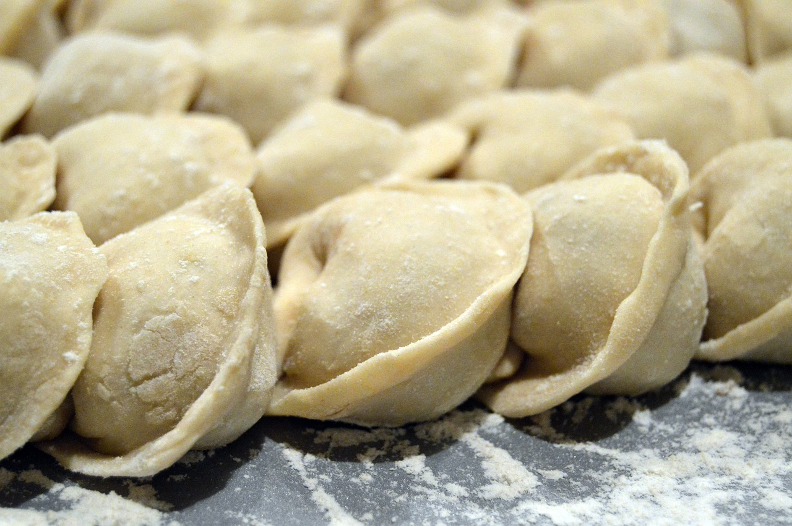

Lasagna

Image of ready meal
Pork and chive is a classic Chinese dumpling filling.
Whether you’re making dumplings for Lunar New Year o
r a weeknight dinner, this recipe can be made in
advance and freezes great.
Dumplings
- 1 1/2 pounds ground pork
- 4 ounces Chinese chives, chopped (about 1/2 cup)
- 3 tablespoons soy sauce
- 2 tablespoons sesame oil
- 1 tablespoon cornstarch
Black vinegar sauce
- 3 tablespoons Chinese black vinegar
- 1/2 teaspoon sugar
- Thinly sliced fresh ginger, optional
Directions
- Make the dumpling filling
- Prepare the wrapper:
- Fold the dumpling